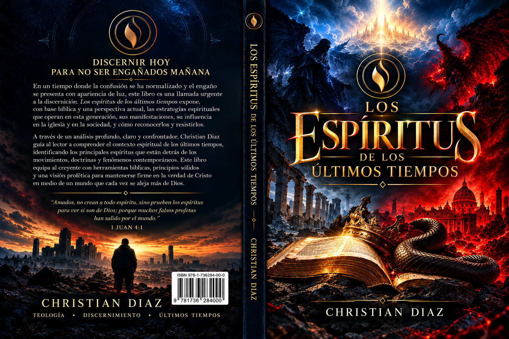

01
Discernimiento espiritual
Reflexiones para reconocer actitudes, influencias y desafíos que requieren atención espiritual.
Una invitación a profundizar en el discernimiento espiritual y examinar los desafíos que enfrenta la Iglesia en los últimos tiempos.
Edición digital en PDF · Compra internacional

En un tiempo donde la confusión se ha normalizado y el engaño puede presentarse con apariencia de luz, esta obra invita a examinar —con base bíblica y una perspectiva actual— las estrategias espirituales que operan en esta generación, sus manifestaciones y su influencia en la Iglesia y la sociedad.
Reflexiones para reconocer actitudes, influencias y desafíos que requieren atención espiritual.
Una mirada a los retos del servicio, el carácter, la unidad y la fidelidad al propósito de Dios.
Temas que invitan a fortalecer la fe y asumir con responsabilidad el caminar cristiano.
Adquiere tu copia digital y accede al libro desde tus dispositivos compatibles.
La oferta está prevista para una edición digital en PDF. La entrega final se configurará en la plataforma de pago elegida.
La página está pensada para lectores internacionales. La compra dependerá de los países y métodos de pago admitidos por la plataforma de checkout.
Después de confirmarse el pago, la plataforma enviará las instrucciones o el enlace de descarga. Haremos una compra de prueba antes de lanzar la página.
La compra está destinada al uso personal del comprador. No se autoriza la redistribución o venta del archivo sin permiso del titular de los derechos.